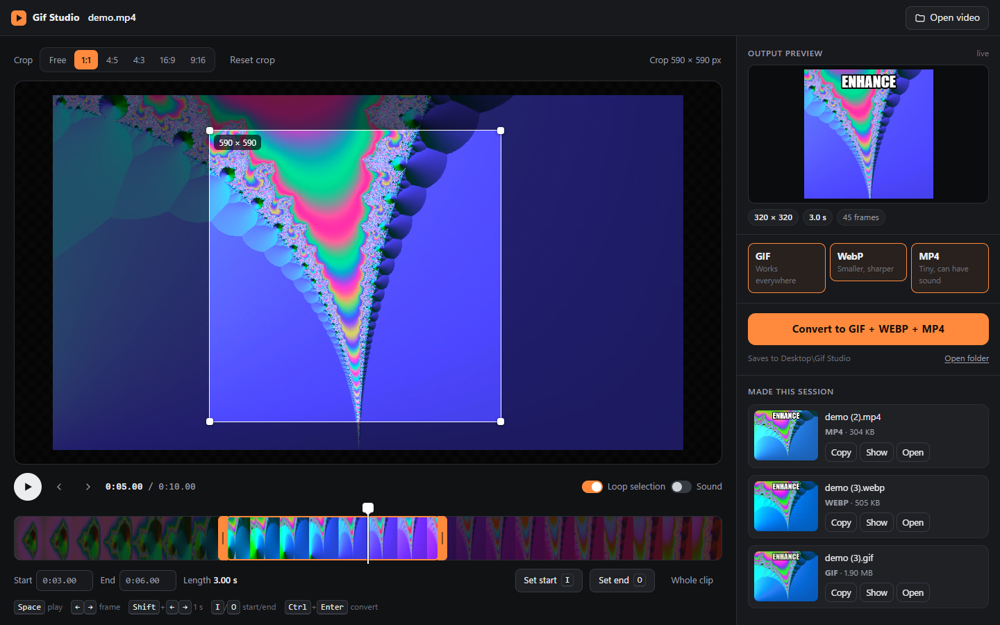
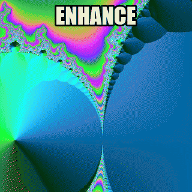

Crop, trim, speed up, add a caption and watch a live preview of the finished clip. Then save it as a GIF, WebP or MP4 with one click.
Windows 10 / 11 · About 30 KB · Needs Node.js and ffmpeg (it offers to install them)

No sliders in the dark. Every change shows up in the output preview while the video plays.
Drag a box on top of the video. Free shape or locked to 1:1, 4:5, 4:3, 16:9 or 9:16.
A thumbnail strip with handles. Drag the playhead, set start and end with I and O, and loop your selection.
0.25× to 3× speed, any frame rate, and Forward, Reverse or Boomerang.
Classic meme-style top and bottom text that shrinks to fit. Korean and other scripts work too.
Fix sideways phone videos or mirror a clip in one click.
Pick one or all three. GIFs use a smart color palette for clean results. MP4 can keep the sound.
Copy puts the finished file on your clipboard, ready to paste into Discord. It also warns you about the 10 MB limit.
Your videos never leave your PC. No uploads, no account and no tracking, and it works offline.
A 3-second square crop with a caption: 320 px wide, 15 fps, 128 colors. It took about two seconds to convert.

There's no installer to click through. It's a small folder you can put anywhere.
Get gif-studio.zip and unzip it anywhere, for example on your Desktop.
Start Gif Studio.batThe first time, it checks for Node.js and ffmpeg (both free). If one is missing it offers to install it with winget, which is built into Windows. Say yes, then start it again.
Gif Studio opens in its own window. Drag a video in, or copy one in Explorer and press Ctrl+V. Finished clips go to a Gif Studio folder on your Desktop.
Rather install things yourself? Get Node.js from nodejs.org (LTS) and ffmpeg with winget install Gyan.FFmpeg.
Gif Studio is a tiny local web app. The "server" only talks to your own computer.
127.0.0.1, so nothing outside your PC can reach it.Yes, it's free, and there's no catch. It's open source under the MIT license, so you can read every line on GitHub.
It's made and tested for Windows. The core works anywhere with Node.js and ffmpeg (node server.js --open), but the Copy, Show and Open buttons and the caption fonts are Windows-specific for now.
GIF size grows with width × height × frames. Try 320–480 px wide, 12–20 fps, and fewer colors. For long or sharp clips, WebP and MP4 are much smaller, and Discord shows both inline.
Windows warns about any .bat file downloaded from the internet. You can open it in Notepad first to see exactly what it does: it checks for Node.js and ffmpeg, then runs node server.js.
The black console window was closed. Start Start Gif Studio.bat again, and the open window reconnects and keeps your clip and settings.